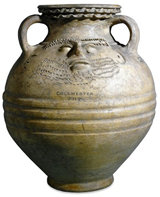

|
Collection's
History
The Department
of Prehistory and Europe (formerly the Department of Prehistory
and Early Europe and the Department of Medieval and Modern Europe)
was created in 2003. The Department's collection includes some
of the earliest objects made by humans 2 million years ago. The
Palaeolithic and Mesolithic material (Old and Middle Stone Age)
comes from Africa, south Asia and western Europe. The Upper Palaeolithic
collection from Europe is one of the most important in the world.
The collection
also includes some of the best known prehistoric and Roman material
found in Britain. The Roman collection reflects all aspects of
life in the province of Britannia from the first to the early
5th century AD. The collection continues chronologically through
the Europe of the medieval period, the Renaissance and the modern
age.
Many of the
spectacular objects from the department can be found on:

Historically
the collection has been enriched by the erudition and expertise
of a succession of distinguished keepers, by the generous benefactions
of individuals and by archaeological activity. Sir Hans Sloane
(1660-1753) enjoyed a reputation as a scientist, physician, antiquarian
and collector. His vast collection, acquired by the nation after
his death, gave rise to the British Museum. Sir Augustus Wollaston
Franks (1826-97) used his private fortune to acquire a vast number
of objects for the museum. During the keepership of Sir Charles
Hercules Read from 1896-1921 the Waddesdon
Bequest came to the Museum (in 1898).
Single, large
acquistions or individual benefactions have contributed to the
character of the department and helped to determine its collecting
policy. Notable among these are the Palaeolithic collections from
Sturge, Christy and Lartet; the Greenwell and Morel collections
from later prehistoric sites in Britain and Europe; and Romano-British
material from the Charles Roach Smith and Gibbs collections. The
comprehensive horological collection springs principally from
the acquisition of collections made by Charles Fellowes (1874),
Octavius Morgan (1888) and Courtney Adrian Ilbert (1958). In 1978
the gift of 1200 pieces of jewellery from the private collector
Mrs Anne Hull Grundy included significant 20th century pieces
and formed the basis of a collecting policy which, since 1979,
has seen the department actively extending its applied arts collection
into the 20th century.
|

Pottery
face-urn Roman Britain, 2nd century AD, from Colchester, Essex
|